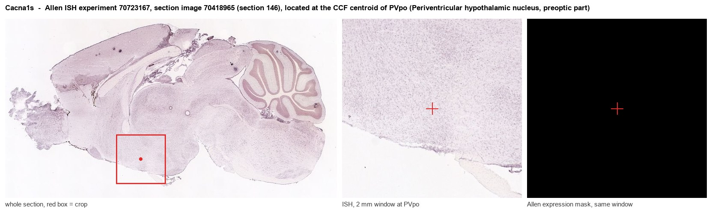
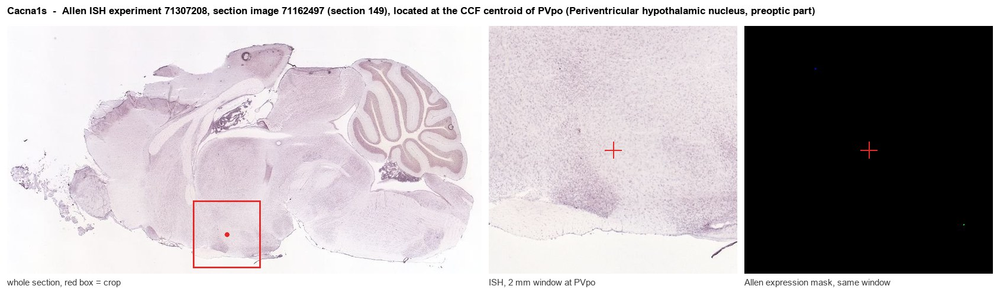
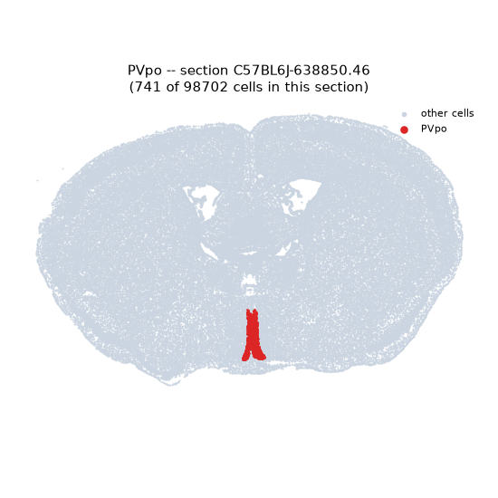
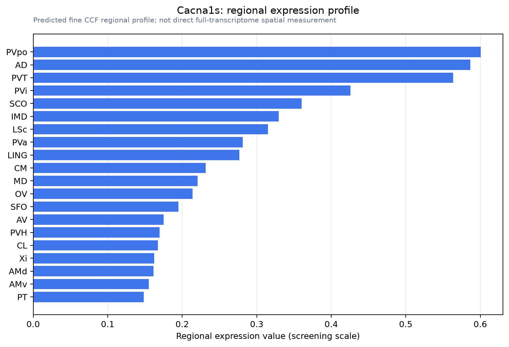

Cacna1s
Voltage-dependent L-type calcium channel subunit alpha-1S (Calcium channel, L type, alpha-1 polypeptide, isoform 3, skeletal muscle) (Dihydropyridine receptor) (DHPR) (Voltage-gated calcium channel su
Spatial tier: RESTRICTED · Class: ION_CHANNEL · Top region: PVpo (Periventricular hypothalamic nucleus, preoptic part) · Positive regions: 18/554
Function in PVpo: evidence, prediction, innovation
- Gene function
- Cacna1s encodes Cav1.1, the pore-forming alpha-1S subunit of the skeletal-muscle L-type calcium channel, also called the dihydropyridine receptor. In muscle it works mostly as a voltage sensor mechanically coupled to the ryanodine receptor RyR1 to trigger calcium release for contraction, rather than as a major calcium conduit. Mutations cause hypokalaemic periodic paralysis and malignant hyperthermia susceptibility.
- Region function
- The preoptic periventricular hypothalamic nucleus lines the third ventricle and contributes to neuroendocrine control, sleep and thermoregulation.
- Published in this region
- none No region-specific literature found. Cacna1s is essentially a skeletal-muscle gene (Flucher 2020; Bannister 2013), and neuronal L-type currents in hypothalamus are carried by Cav1.2 (Cacna1c) and Cav1.3 (Cacna1d), so a PVpo signal most plausibly reflects vascular or perivascular tissue, or low-confidence probe signal, rather than genuine neuronal Cav1.1.
- Predicted function
- Prediction: genuine neuronal Cav1.1 here is unlikely, and the first experiment should be validation by RNAscope or a well-characterised antibody rather than manipulation. If confirmed, the most plausible role is a dihydropyridine-sensitive, slowly inactivating L-type conductance supporting plateau potentials and activity-dependent CREB signalling in periventricular neuroendocrine cells, duplicating functions normally attributed to Cav1.2 and Cav1.3. A conditional preoptic knockout is predicted to produce no thermoregulatory or neuroendocrine phenotype.
- Innovation
- ★★☆☆☆ 2/5 Low, because the most probable explanation for this pairing is a mapping artefact of a skeletal-muscle gene rather than untapped brain biology.
- Tools
- Cacna1s floxed and muscular dysgenesis (mdg) mice; dihydropyridines nifedipine and nimodipine and the agonist Bay K8644, none subtype-selective; monoclonal anti-Cav1.1 antibodies from muscle work; no Cacna1s-Cre line.
- References
Direct evidence located at the region

Allen ISH experiment 70723167, section image 70418965 (section 146): the section that contains the CCF centroid of Periventricular hypothalamic nucleus, preoptic part according to the Allen image-to-atlas alignment (reference_to_image), with a 2 mm window around that point. Left: whole section, red box = window. Middle: ISH signal. Right: Allen's expression-mask view of the same window. open this image in the Allen viewer

Allen ISH experiment 71307208, section image 71162497 (section 149): the section that contains the CCF centroid of Periventricular hypothalamic nucleus, preoptic part according to the Allen image-to-atlas alignment (reference_to_image), with a 2 mm window around that point. Left: whole section, red box = window. Middle: ISH signal. Right: Allen's expression-mask view of the same window. open this image in the Allen viewer
Direct spatial evidence

Regional expression figure

Predicted WMB × fine-CCF profile; not direct full-transcriptome spatial measurement.
Spatial profile
Evidence and specificity
- Evidence status
- PREDICTED_FINE
- Direct sources
- None; predicted localization only
- Exclusive threshold
- 12 positive regions out of 554
- Spatial specificity
- 0.342
- Top-region fraction
- 0.068
- Filter status
- PASS
Interpretation limits
- Cell-type-to-region projection is imputed expression, not direct spatial measurement.
- Adult reference atlases do not establish stability across age, sex, strain, state, or disease.
- Transcript abundance does not guarantee protein abundance or genetic-tool performance.